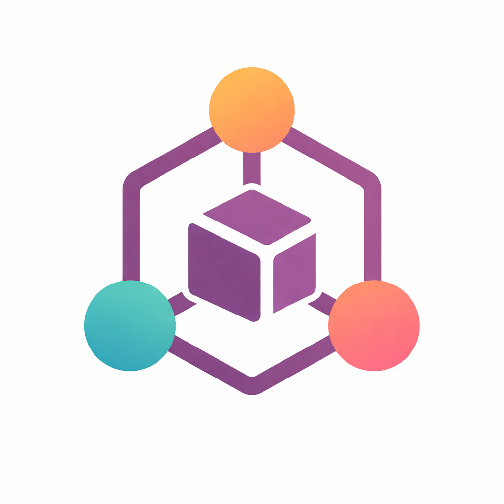

Odoo 17 Community module for IoT boxes, devices and print jobs, designed to work with an external Python agent on Windows or Linux.
/iot/api/v1/register/iot/api/v1/heartbeat/iot/api/v1/jobs/poll/iot/api/v1/jobs/result/iot/api/v1/config/iot/api/v1/devices/syncThis repository contains the Odoo module only. The external IoT agent is deployed separately and communicates with Odoo through outgoing HTTP requests.